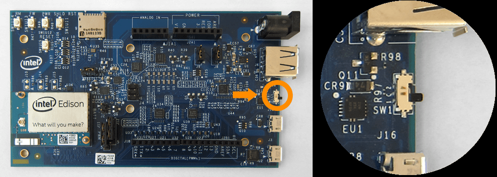

Getting Started with Intel® Edison and Arduino IDE
This document explains how to connect your Intel® Edison with Arduino expansion board to the computer and upload your first sketch.
(:*toc :)
1 | Get an Intel® Edison with an Arduino board expansion board and a USB cable
In this tutorial, we assume you're using an Intel®
Edison with an Arduino expansion board. It is assumed that you have already
connected it to the Arduino breakout board, if that is not the case please
follow the tutorial at:
https://software.intel.com/en-us/articles/intel-edison-arduino-expansion-board-assembly
You also need a standard micro USB cable.

Figure 1 – Assembled Intel® Edison with Arduino expansion board.

Figure 2- You’ll need one of these cables.
2 | Connect the board
To upload Arduino sketches the Intel® Edison board must be powered up and connected to your computer.
Find the microswitch in between the USB ports on the expansion board. Switch the microswitch down towards the micro-USB ports, if it isn't already.

Figure 3 - Intel® Edison board with the microswitch switched toward the micro USB ports
Plug in one of the micro-USB cables to the middle USB connector on the expansion board.

Figure 4 - Plug in USB cable to middle port
Plug in other end of the usb cable to your computer.

Figure 5 - Plug the other end of the USB cable into your computer USB port
A green light should light up on the expansion board. If it doesnt check your connection.

Figure 6 - The green power LED should light up
Wait a moment for the board to boot up. You will know that the board is fully initialized when your computer mounts a new drive (much like inserting a SD card into your computer).
Note: If you do not see a new drive, and the LED light (DS1 on the Arduino expansion board) is occasionally turning on and off, it is likely that the DC power supply isn't connected properly.
3 | Open the blink example
Open the LED blink example sketch: File > Examples > 1.Basics > Blink. You should see a window similar to the one below.

Figure 7 - Blink example loaded into Arduino IDE
4 | Select your board
You'll need to select the Intel® Edison in the Tools > Board menu.

Figure 8 - Select Intel® Edison from the Tools>Board menu
5 | Select your serial port
Select the serial device of the board from the Tools | Serial Port menu. The easiest way to find what port the board is using is by disconnecting your board, restarting the IDE, and re-opening the menu; the entry that disappears should be the Intel® Edison board. Reconnect the board, restart the IDE, and select that serial port.
On Windows*
The port is likely to be COM3 or higher and is called "Intel Edison Virtual Com Port" in the Device Manager, like in Figure 9. It is NOT "USB Serial Port". COM1 and COM2 are usually reserved for hardware serial ports.

Figure 9 - Select Intel Edison Virtual Com Port (COM#)

Figure 10 - Select COM port from Tools>Serial Port menu is using Windows*
Now the bottom right should match the COM port number of the 'Intel Edison Virtual Com Port (COM#)" from the Device Manager, like in Figure 11.

Figure 11 - The COM number should match the Intel Edison Virtual Com Port (COM#).
On Linux*
The port is likely to be /dev/ttyACM0.

Figure 12 - Select /dev/ttyAMC0 from the Tools>Serial Port menu is using Linux*
On Mac OS X*
The port is likely to be /dev/cu.usbmodemxxxx.

Figure 13 - Select /dev/cu.usbmodemxxxx from the Tools>Serial Port menu is using OS X*
6 | Upload and Run the Program
Click the Upload button in the upper left to load and run the sketch on your board.
Figure 14 - Click the Upload button to upload and launch your sketch
You should see a "Done Uploading" and a "Transfer complete" when it has uploaded, like in Figure 15.

Figure 15 - You should see "Transfer complete"
The DS2 LED on your board should now blink with a 1 second delay.